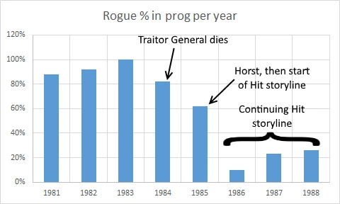

| Prog 571 by Steve Dillon | Prog 577 by Simon Bisley | Prog 588 by Brendan McCarthy |
The comic struts confidently through the summer of 1988, declaring "cool assassins" and things that are "well wicked" (like the upcoming returns of Nemesis, Slaine and Zenith).
Rogue Trooper
Hit Two ends with an interstellar gang of assassins being set against Rogue. In the two-part (and cunningly named) Hit Three Rogue takes out another Goldfinger-style target with the slight twist that one of the henchmen he offs (unbeknownst to him) was an assassin targeting him. It's assassinception!

Rogue returns in 13 progs, continuing the terribly sporadic momentum of a storyline that started in 1985...
Strontium Dog
Stone Killers ends with Johnny and Red having fallen out and then the one-off Incident on Zeta moves Alpha to a meet with Middenface. The No-Go Job sees Middenface, his dug and Alpha join forces on a mercenary mission to the war planet No-Go. Unfortunately, this is a scam so that a Lyran sorcerer can retreive the bones of Malak Brood (from '83's The Moses Incident).
Continues in the next stage...
Judge Dredd
Some regular fare in this stage with stand-outs being the fondly remembered Full Mental Jacket (running for five episodes) followed by the vital Bloodline two-parter. The latter introduces Kraken, an ex-Judda (from the epic Oz in the previous stage) and younger clone-brother of Dredd. Justice Department is attempting to deprogram him so that he can ultimately serve as a replacment for a disillusioned and aging Dredd. (Yes, he was considered aging all those years ago.)
PJ Maybe returns in the next stage...
Summer Magic *NEW THRILL*
Dr. Jekyll and Mr. Hyde meets The Hound of the Baskervilles featuring Harry Potter (or Tim Hunter from the Books of Magic), except this is 1988. Luke Kirby is a boy who becomes his uncle's apprentice ... magician. Unfortunately for him this is more Tales of the Unexpected than The Railway Children, so great power also brings dark shadows of a doom-laden future.
Sort of returns in the next stage: not in the prog but in the first Winter Special...
The A.B.C. Warriors: The Black Hole
In this second part the Warriors battle each other in a conflict between order and khaos, eventually seeing through their differences to finish off the Monad and effectively save Earth by stabilizing the black hole bypass system. They then nick a spaceship and fly free.
The Warriors return in 1991's prog 750...
Bad Company II: The Krool Heart
In this second half of the second series, the quite compelling central plot is that the Krool Heart is going to be reborn - with someone jumping in to influence it, and thus influence all of the Krool thereafter. Who will it be?
The first series ended with no scope for a sequel. This second series has ended with no scope for a sequel. Series three begins in 1993's prog 828...
Tales From the Doghouse *SPIN-OFF*
Spinning off from Strontium Dog, this seeks to tell short tales of Dogs other than Alpha (or McNulty, or Red). Here we get Back-To-Front Jones and Tom "Birdy" Lilley. Both of these are just jokes about their individual disabilities mutations: so Jones keeps bumping into things because his head is on backwards and "Birdy" has wings but can't fly.
More of these in the next stage...
Tyranny Rex: Under Foreign Skies
Jonah and the whale meets Escape from New York ... in space! Between Tyranny's first adventure (In His Image from progs 566-568) and this one, there was a one-off in the 1988 Sci-Fi Special that directly tied Tyranny into the world of Indigo Prime (which had first appeared in the guise of Void Indiga in the Future Shock A Change of Scenery in prog 490). John Smith, as with Pat Mills before him, has a tendency to write all of his characters into the same universe.
More short-lived, throwaway chaos from Tyranny in the next stage...
Slaine the King: A Prologue
A three-page post-battle vision of slaughter with just these words: "...he didn't think it too many." (The artist, Glenn Fabry, taking on script duties here clearly decided to just dip his toe gently into the murky waters of dialogue and opted for less is more.)
The three-part mini-series this advertizes starts in the next stage...
Tribal Memories *NEW THRILL*
Brave New World meets apartheid... in space!
This is one and done, because it told a story well and then ended.
Nemesis the Warlock, Book IX: Deathbringer
Nemesis ... in 80s Britain!
This continues into the next stage (which has a fuller description)...
Hap Hazzard
Only Fools and Horses ... in space!
Returns for more short adventures in the next stage...